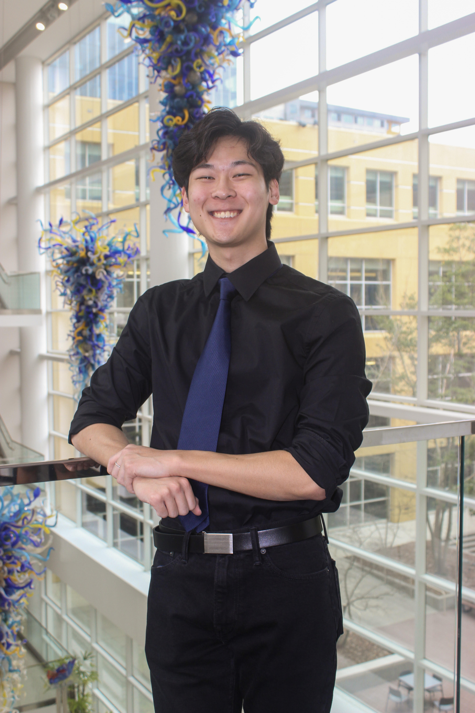

Hi, I'm Dylan! I'm a Computer Science major with concentrations in Intelligence and Media at the Georgia Institute of Technology. My academic focus allows me to blend rigorous technical engineering with creative problem-solving and design, giving me a unique perspective on software development. I am from Johns Creek, Georgia, and some of my hobbies include watching tv shows/movies, playing video games, working out, singing/music, and rock climbing.